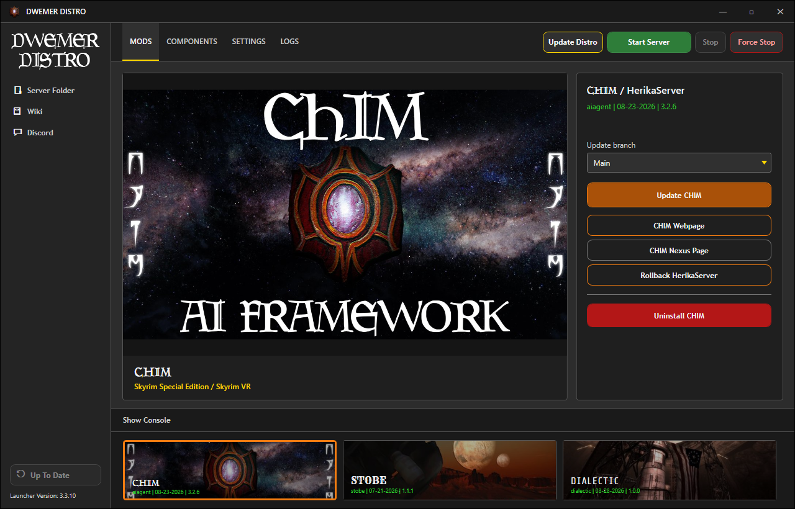
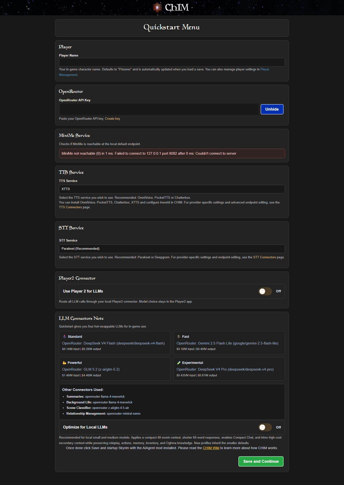

Access Token Creation. Make sure it has Read access!
After Quickstart finishes, select CHIM on the launcher Mods page.
Click CHIM Webpage to open the server website.
If the server is stopped, confirm the prompt to start it first.

The CHIM Mods page provides its update, webpage, Nexus, rollback, and uninstall controls.
CHIM Web Quickstart
Complete the Quickstart Menu in your browser:
Your Player Name is detected from Skyrim. Start or load your game if it still says Waiting for game.
Paste your OpenRouter API Key, or use the local Player2 connector.
Select your TTS Service and STT Service.
Review the four LLM choices and any local-LLM optimization setting.

CHIM Quickstart collects the main server settings needed for a first run.
Click Save and Continue.
OpenRouter is optional. To use another provider directly, save the rest of QuickStart and follow Use Your Own LLM Provider.
To run your own language model, use the launcher's LLM Studio component. Follow the Local LLM Guide to download, load, test, and connect it inside DwemerDistro.
Skyrim (AIAgent) Mod Setup
Playing Skyrim VR? Skip this Skyrim SE/AE list and use Skyrim VR Requirements below instead.
Make sure it is towards the bottom of your mod organizer.
Now you are ready to play!
Update Note
For normal server updates, click Update CHIM on the launcher Mods page. Install the latest
AIAgent mod from Nexus when a new game-plugin file is included. You do not need to reinstall DwemerDistro unless the release notes say so.
Quickstart And Updates
Use the Quickstart shortcut on the server home page when you need to return to setup.
First check: Send a typed message to a nearby NPC and confirm a reply. Then test voice playback and microphone input.
Keep the pair together: Update the game plugin and server to matching versions. Keep your personal settings file when replacing the main mod files.
Separate characters: See Playthrough Saves before switching to another character or campaign.